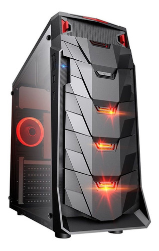

CPU O Procesador
►Concepto
El procesador (CPU, Central Processing Unit) es el componente más importante dentro del PC. Es el cerebro de todo el funcionamiento del sistema, el encargado de dirigir todas las tareas que lleva a cabo el equipo y de ejecutar el código de los diferentes programas.
